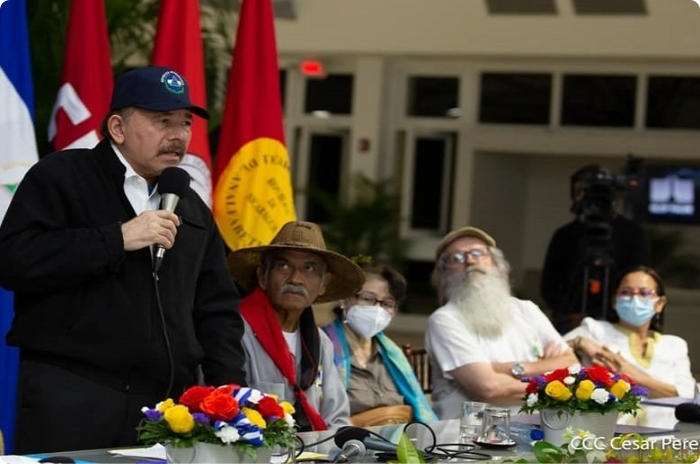
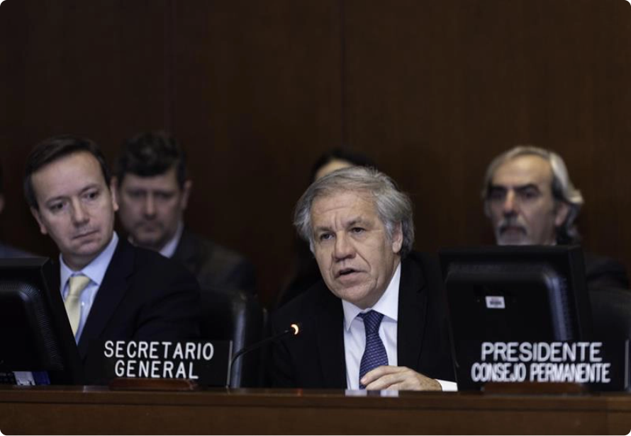

DESTACADOS:
OEA · Enrique Bolaños Geyer · represión · elecciones nacionales · 25 aniversario · EEUU · Ley Renacer ·Daniel Ortega
inventó un “tío
abuelo obispo” para
atacar con virulencia
a la Iglesia

Su hermano Humberto Ortega lo
desmiente: Marco Antonio Ortega no era
un obispo “cómplice”, sino el abuelo que abogó por su padre Daniel Ortega en
1934
EMERGENCIA CORONAVIRUS
Covid-19 en ascenso: Minsa admite más
de 200 contagios en la última semana
POLÍTICA
Victoria Cárdenas y Berta Valle exigen ver
a Juan Sebastián Chamorro y Félix
Maradiaga
Régimen generaliza 90 días de “investigación”
para opositores que acusa de “traición a la
patria”; ambos precandidatos continúan
incomunicados

OEA condena con 26 votos el arresto de
POLÍTICA
OEA condena con 26 votos el arresto de
opositores y exige su liberación
inmediata
El Consejo Permanente aprueba resolución por amplia
mayoría; únicamente cinco países miembros se
abstuvieron y tres votaron en contra
POLÍTICA
La fórmula de Daniel Ortega para anular a la
oposición de la competencia electoral
Fiscalía y Policía usan “Ley de Soberanía” para detener a
opositores, y los encarcela por noventa días con el
pretexto de “investigarlos”
NACIÓN
Policía secuestra a opositores
Dora M. Téllez, Ana M. Vijil,
Suyen Barahona y Hugo Torres
POLÍTICA
“El respeto a los derechos
humanos está por encima de
cualquier principio de no
injerencia”
Expresidente costarricense Rafael
Calderón destaca histórica
resolución de cancilleres de la
OEA que condenó a la dictadura
de Somoza en junio de 1979